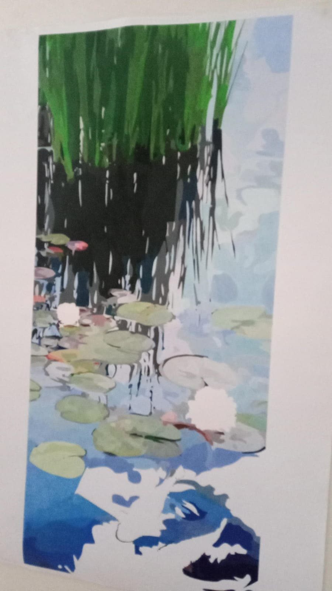
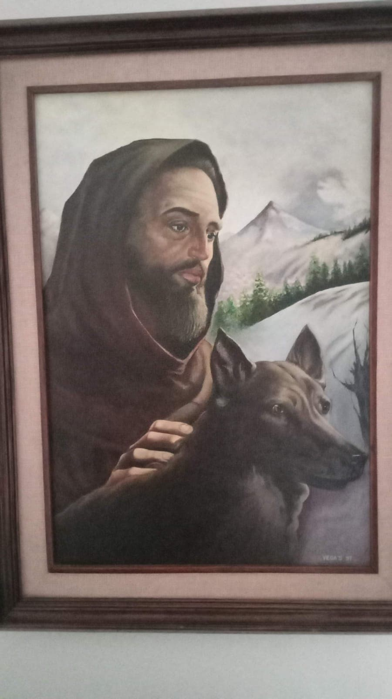
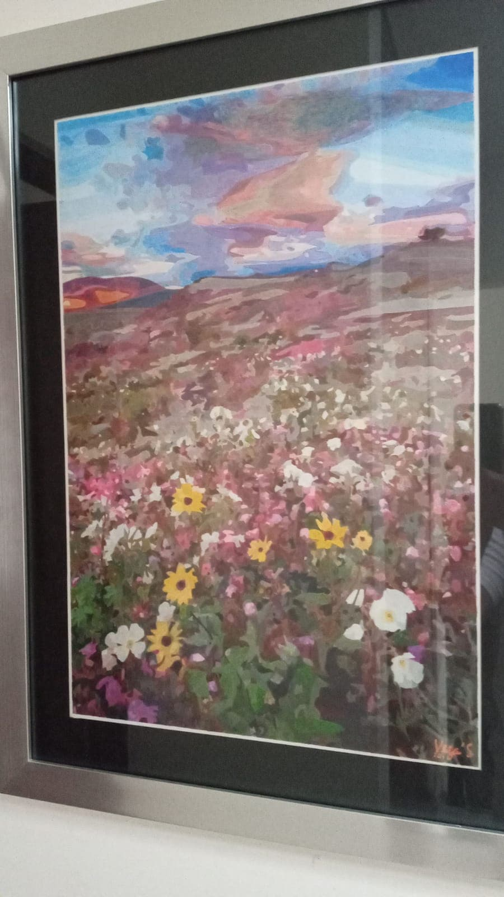
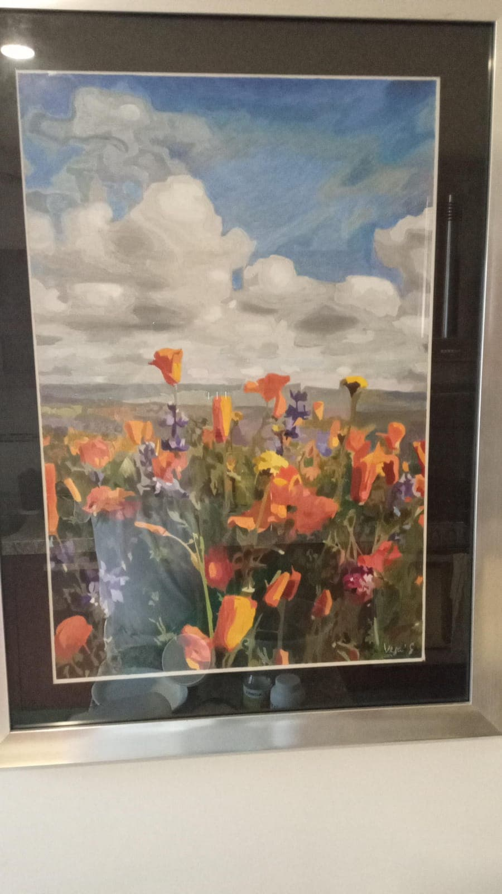
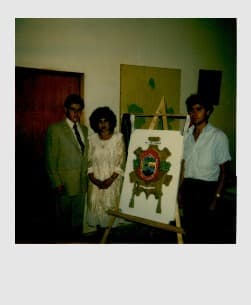
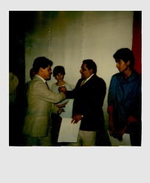
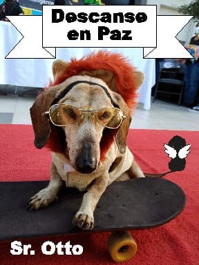
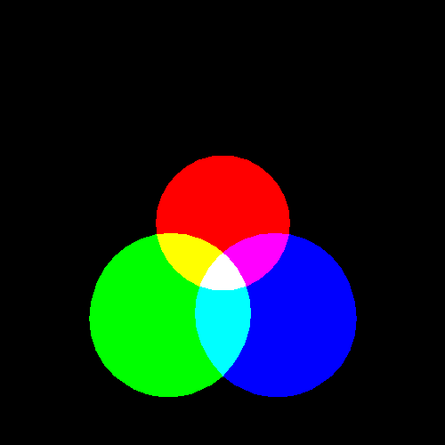

El Ing.Jose V.S,a contribuido con aportaciónes al programa "Conoscamos de.." y creador del escudo de Jaral de progreso.
"Conoscamos de..."
Programa de Televisión para toda la familiar que promueve la educación cívica en el ámbito educativo, empresarial y social, que invita al respeto, los valores humanos y el conocimiento de las normas de convivencia social desde el núcleo familiar. El programa contiene sección infantil, Invitados, entrevistas y preguntas en vivo al aire, con temas de actualidad y de diversa índole enfocado a la formación, información y educación de valores
Capítulo 1
Capítulo 2
Capítulo 3
Capítulo 4
"Escudo de Jaral de Progreso"
Donde El cuero color café sobre el que se encuentra el escudo municipal simboliza estabilidad, sentido del deber, tolerancia, seguridad y denota la antigüedad de la ciudad; tiene entrelazado un cordón negro que representa el asentamiento en la región de la orden de los agustinos; el color rojo, símbolo de fuerza, anhelo, justicia, vida, unión y trabajo, sirve de fondo al lema de la ciudad "CONSENSUS ET LABOR PROGRESUM GENERANT" que significa "La unión y el trabajo hacen el progreso". Al centro, en la parte superior del escudo, se encuentra plasmada la silueta del cerro del Culiacán, vista desde Jaral del Progreso, sobre el cual esta representado el sol y el alba.
En la parte izquierda se puede observar una cabeza de vaca y dos espigas, que simbolizan la producción agrícola y ganadera; a la derecha se dibuja el puente en el que el 11 de octubre de 1810 se verifico el encuentro histórico entre el Cura Miguel Hidalgo y Costilla y Don Manuel Muñatones. En la parte inferior representando el trabajo, están plasmados un tractor y un surco. Los racimos de flores que se encuentran debajo de todo lo anterior representan a una planta llamada jara, la que por abundar en la región dio origen al nombre del municipio: Jaral del Progreso.
Más aparte ,es un gran amante a las artes y reliazador de grandes pinturas,como parte que hizo 3 pinturas de su creación del escudo del municipio de Guanajuato.




Entraga del escudo



